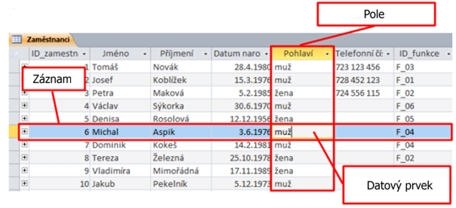

Databáze – tabulky
- co je to databáze, k čemu slouží, praktické využití
- tvorba tabulek, primární klíč
- pojmy záznam, pole, datový prvek
- import tabulky
- relace (1:1, 1:N, N:M)
Databáze – úvod.docx
Využití
- Databáze je seznam dat, který shromažďujeme za nějakým konkrétním účelem
- Slouží k uchovávání velkého množství dat, především tak, aby se v nich dalo rychle orientovat a vyhledávat
- Příklad použití:
- Knihovny – databáze knih
- Databáze filmů
- Seznam zaměstnanců
- Evidence pacientů v nemocnici
- Nejčastější je relační databáze
- Uchovává data v menších tabulkách, aby se zabránilo nadbytečností dat (stejná data ve více tabulkách)
- Relace určují vztahy mezi tabulkami
- Abychom měli dobrou databázi, musíme nejprve dobře navrhnout její strukturu
Primární klíč
- Zajišťuje jedinečnou identifikaci záznamů
Záznam, pole, datový prvek

- V jedné tabulce by měly být informace o jednom typu objektu. Databázová tabulka je podobná běžné tabulce. Řádky
obsahují záznamy (o jednom objektu) a sloupce označujeme pole. Průsečík určitého řádku a
sloupce, který obsahuje jedinou hodnotu, se nazývá datový prvek.